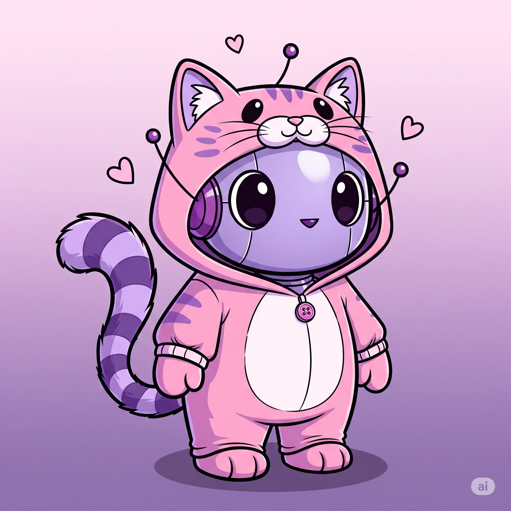

Bem-vindos à IA Asyul

Ana Luysa Mendes
Estudante de Ciência da Computação - 6° Semestre


Contato
 LinkedIn
LinkedIn
 E-mail
E-mail
 Whatsapp
Whatsapp Idiomas


Quem é Ana Luysa Mendes?
Oi, eu sou a Ana Luysa Mendes. É um prazer te receber aqui! Sou estudante do curso de Bacharelado em Ciência da Computação e estou no 6° Semestre. Meus maiores interesses na área tecnológica estão nas áreas de Front-End e Segurança da Informação.
Minhas Hard Skills
- HTML
- CSS
- JAVASCRIPT
- FIGMA
- GITHUB
Minhas Soft Skills
- Trabalho em Equipe: Colaboro ativamente para resultados de alta qualidade, valorizando a sinergia em projetos.
- Resolução de Problemas: Abordo desafios com mente analítica, buscando soluções eficientes e inovadoras.
- Flexibilidade: Adapto-me facilmente a novas demandas e ambientes, encarando mudanças como oportunidades.
- Proatividade e Iniciativa: Transformo ideias em ação, buscando constantemente aprimoramento e inovação.
- Curiosidade e Aprendizado Contínuo: Estou sempre em busca de novos conhecimentos para me manter atualizada e relevante.
- Organização: Mantenho projetos e processos estruturados e claros, otimizando o tempo e a eficiência.
Meus Projetos
- CozyCoffee: Um timer Pomodoro com um design aconchegante e a temática de café.
- Portfólio: Meu Portfólio pessoal, que estou sempre aprimorando com novos aprendizados.
- Landing Page: Uma página de destino desenvolvida para treinar e aprofundar minhas habilidades em HTML, CSS e JavaScript.
Como entrar em contato?
Você pode entrar em contato através dos links abaixo: